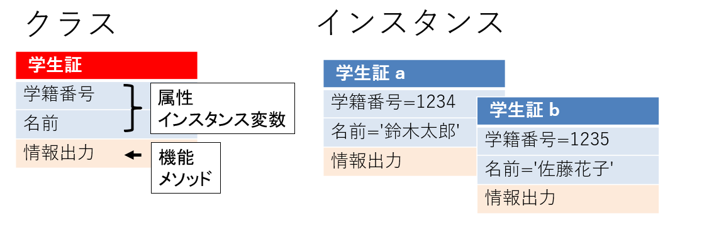
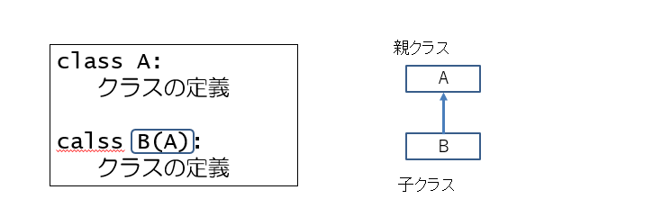

7. 第6章 クラスの基本¶
7.1. 新しいクラスを作る¶
7.2. クラスとは¶
クラスとは、オブジェクトの種類のこと
例： strクラス、listクラス、dictクラス
クラスはオブジェクトがどのような情報を持つか
どのような機能を持つかを定義する
メソッド: どのような機能を持つか
インスタンス変数: どのような情報を持つか
7.3. これから扱うクラスとインスタンスの例¶
7.4. クラスの定義¶
構文
class クラス名：
初期化メソッドなどの定義
class StudentCard: <---- StudentCardクラスの定義
pass
a = StudentCard() <---- StudentCardクラスのインスタンスを生成して変数aに代入
※ pass は何もしない命令
インスタンスが生成されるイメージ

7.5. 初期化メソッド¶
初期化メソッド
インスタンスが生成されるときに自動的に実行されるメソッド
（これまでに学習した関数のようなもの）
構文
def __init__(self):
処理内容
例
class StudentCard:
def __init__(self):
print('初期化メソッド内の処理です')
7.6. インスタンス変数¶
インスタンス変数
個々のインスタンスごとの値を持つ変数
class StudentCard:
def __init__(self):
print('初期化メソッド内の処理です')
self.id = 0 <---- インスタンス変数
self.name = '未定' <---- インスタンス変数
a = StudentCard()
b = StudentCard()
7.7. インスタンス変数の参照¶
class StudentCard:
def __init__(self):
print('初期化メソッド内の処理です')
self.id = 0
self.name = '未定'
a = StudentCard()
b = StudentCard()
a.id = 1234 <---- インスタンス変数の値を変更
a.name = '鈴木太郎' <---- インスタンス変数の値を変更
b.id = 1235 <---- インスタンス変数の値を変更
b.name = '佐藤花子' <---- インスタンス変数の値を変更
7.8. 初期化メソッドの引数¶
class StudentCard:
def __init__(self, id, name):
print('初期化メソッド内の処理です')
self.id = id
self.name = name
a = StudentCard(1234, '鈴木太郎') <---- インスタンスを生成するときに、2つの値を引数にする
b = StudentCard(1235, '佐藤花子') <---- インスタンスを生成するときに、2つの値を引数にする
7.9. クラス変数とインスタンス変数¶
7.10. メソッドの定義¶
7.11. これから扱うクラスとインスタンスの例¶

7.12. メソッド¶
メソッドとは
インスタンスが行う命令文をまとめたもの（関数のようなもの）
第一引数は自分自身を表す self
構文
def メソッド名(self, その他の引数):
処理内容
class StudentCard:
def __init__(self, id, name):
self.id = id
self.name = name
def print_info(self):
print('学籍番号: ', self.id)
print('氏名: ', self.name)
a = StudentCard(1234, '鈴木太郎')
b = StudentCard(1235, '佐藤花子')
a.print_info()
b.print_info()
7.13. クラスメソッド¶
クラスメソッドとは
インスタンスを生成しなくても
クラス名.メソッド名() で実行できるメソッド
第一引数は自分のクラスを表す cls
class SimpleCalc:
@classmethod <---- 続くメソッドの定義がクラスメソッドであることを知らせるデコレータ
def get_triangle_area(cls, base, height): <---- クラスメソッドの定義
return base * height / 2
print(SimpleCalc.get_triangle_area(10, 5))) <---- クラスメソッドの呼び出し
※ デコレータは既存の関数やクラスの動作を変更または拡張するための機能。関数やクラスの前後に特定の処理を追加する
7.14. オリジナルのクラスをモジュールとして利用する¶
クラスを定義したファイルをモジュールとして利用できる

7.15. __name__変数¶
__name__変数の値
プログラムコードが直接実行されたとき → 'main'
インポートされたとき → モジュール名 （この場合は'name_card'）
7.16. 継承¶
7.17. 継承¶
継承とは
既存のクラスの機能を再利用し、それを拡張することで新しいクラスを作成すること
7.18. Python の継承¶
全てのクラスがObjectクラスを直接または間接的に継承する
1つのクラスが2つのクラスを継承できる（多重継承）
7.19. 継承のしかた¶
構文
class クラス名(親クラス名):
クラス定義

7.20. インスタンス変数とメソッドの継承¶
student_card.py
class StudentCard:
def __init__(self, id, name):
self.id = id
self.name = name
def print_info(self):
print('学籍番号: ', self.id)
print('氏名: ', self.name)
from student_card import StudentCard
class IStudentCard(StudentCard):
def __init__(self, id, name, nationality):
self.nationality = nationality
super().__init__(id, name)
7.21. メソッドのオーバーライド¶
オーバーライドとは
スーパークラスと同じ名前のメソッドをサブクラスで定義すること。スーパークラスのメソッドはサブクラスのメソッドで上書きされる。
from student_card import StudentCard
class IStudentCard(StudentCard):
def __init__(self, id, name, nationality):
self.nationality = nationality
super().__init__(id, name)
def print_info(self):
print('国籍: ', self.nationality)
print('学籍番号: ', self.id)
print('氏名: ', self.name)
親クラスも同じ名前のメソッドを持っている
7.22. 親クラスのメソッドの呼び出し¶
super().メソッド名()
とすることで、子クラスの中から、親クラスのメソッドを呼び出すことができる
from student_card import StudentCard
class IStudentCard(StudentCard):
def __init__(self, id, name, nationality):
self.nationality = nationality
super().__init__(id, name)
def print_info(self):
print('国籍: ', self.nationality)
super().print_info()
7.23. 練習問題¶
7.24. 問題 1¶
次の文章の空欄に入れるべき語句を、選択肢から選んでください。
* Pythonは[（1）]指向型の言語といわれ、クラスは[（1）]の属性や機能を定義したものです。
* クラスの定義の中で[（1）]の持つ情報は[（2）]に持たせることができ、機能は[（3）]に持たせることができます。
* インスタンスが生成されるときに自動的に呼び出されるメソッドを [
（4）]またはコンストラクタと呼びます。
【選択肢】
・クラス変数 ・インスタンス変数 ・関数
・オブジェクト ・メソッド ・初期化メソッド
7.25. 問題 1 （解答）¶
次の文章の空欄に入れるべき語句を、選択肢から選んでください。
* Pythonは[ オブジェクト ]指向型の言語といわれ、クラスは[ オブジェクト ]の属性や機能を定義したものです。
* クラスの定義の中で[ オブジェクト ]の持つ情報は[ インスタンス変数 ]に持たせることができ、機能は[ メソッド ]に持たせることができます。
* インスタンスが生成されるときに自動的に呼び出されるメソッドを [初期化メソッド ]またはコンストラクタと呼びます。
【選択肢】
・クラス変数 ・インスタンス変数 ・関数
・オブジェクト ・メソッド ・初期化メソッド
7.26. 問題 2¶
空欄（A）に、問いの条件に合う関数を追加してください。空欄（B）には、その関数を呼び出す命令文を記述してください。なお、関数に戻り値がある場合は、受け取った戻り値を出力するようにしてください。引数の値は自由に決めてかまいません。
# 個人の情報を表すクラス
class Person:
def __init__(self, name, age):
self.name = name # 名前
self.age = age # 年齢
# ここに設問の関数を追加する
(A)
a = Person("高橋太郎", 19)
b = Person("小林花子", 18)
# 追加した関数を呼び出す．戻り値がある場合は出力する。
(B)
7.27. 問題 2-1¶
# 個人の情報を表すクラス
class Person:
def __init__(self, name, age):
self.name = name # 名前
self.age = age # 年齢
# ここに設問の関数を追加する
(A)
a = Person("高橋太郎", 19)
b = Person("小林花子", 18)
# 追加した関数を呼び出す．戻り値がある場合は出力する。
(B)
関数名： print_info
引数列： p (Personオブジェクト)
処理の内容: 引数で受け取るPersonオブジェクトの、名前と年齢の情報を出力する
7.28. 問題 2-1 （解答）¶
# 個人の情報を表すクラス
class Person:
def __init__(self, name, age):
self.name = name # 名前
self.age = age # 年齢
# ここに設問の関数を追加する
def print_info(p):
print('名前', p.name)
print('年齢', p.age)
a = Person("高橋太郎", 19)
b = Person("小林花子", 18)
# 追加した関数を呼び出す．戻り値がある場合は出力する。
print_info(a)
関数名： print_info
引数列： p (Personオブジェクト)
処理の内容: 引数で受け取るPersonオブジェクトの、名前と年齢の情報を出力する
7.29. 問題 2-2¶
# 個人の情報を表すクラス
class Person:
def __init__(self, name, age):
self.name = name # 名前
self.age = age # 年齢
# ここに設問の関数を追加する
(A)
a = Person("高橋太郎", 19)
b = Person("小林花子", 18)
# 追加した関数を呼び出す．戻り値がある場合は出力する。
(B)
関数名： age_check
引数列： p (Personオブジェクト)、i(整数値)
処理の内容: 引数で受け取るPersonオブジェクトの年齢が、引数iの値を超えている場合はTrueを、そうでない場合はFalseを返す。
7.30. 問題 2-2（解答）¶
# 個人の情報を表すクラス
class Person:
def __init__(self, name, age):
self.name = name # 名前
self.age = age # 年齢
# ここに設問の関数を追加する
def age_check(p, i):
return p.age > i
a = Person("高橋太郎", 19)
b = Person("小林花子", 18)
# 追加した関数を呼び出す．戻り値がある場合は出力する。
print(age_check(a, 20))
関数名： age_check
引数列： p (Personオブジェクト)、i(整数値)
処理の内容: 引数で受け取るPersonオブジェクトの年齢が、引数iの値を超えている場合はTrueを、そうでない場合はFalseを返す。
7.31. 問題 2-3¶
# 個人の情報を表すクラス
class Person:
def __init__(self, name, age):
self.name = name # 名前
self.age = age # 年齢
# ここに設問の関数を追加する
(A)
a = Person("高橋太郎", 19)
b = Person("小林花子", 18)
# 追加した関数を呼び出す．戻り値がある場合は出力する。
(B)
関数名： print_younger_person_name
引数列： p1 (Personオブジェクト)、p2 (Personオブジェクト)
処理の内容: 引数で受け取る2つのPersonオブジェクトのうち、年齢の若いほうの名前を出力する。ただし、同じ年齢の場合はP1の名前を出力する。
7.32. 問題 2-3（解答）¶
# 個人の情報を表すクラス
class Person:
def __init__(self, name, age):
self.name = name # 名前
self.age = age # 年齢
# ここに設問の関数を追加する
def print_younger_person_name(p1, p2):
if p1.age <= p2.age:
print(p1.name)
else:
print(p2.name)
a = Person("高橋太郎", 19)
b = Person("小林花子", 18)
# 追加した関数を呼び出す．戻り値がある場合は出力する。
print_younger_person_name(a, b)
関数名： print_younger_person_name
引数列： p1 (Personオブジェクト)、p2 (Personオブジェクト)
処理の内容: 引数で受け取る2つのPersonオブジェクトのうち、年齢の若いほうの名前を出力する。ただし、同じ年齢の場合はP1の名前を出力する。
7.33. 問題 2-4¶
# 個人の情報を表すクラス
class Person:
def __init__(self, name, age):
self.name = name # 名前
self.age = age # 年齢
# ここに設問の関数を追加する
(A)
a = Person("高橋太郎", 19)
b = Person("小林花子", 18)
# 追加した関数を呼び出す．戻り値がある場合は出力する。
(B)
関数名： get_total_age
引数列： p1 (Personオブジェクト)、p2 (Personオブジェクト)
処理の内容: 引数で受け取る2つのPersonオブジェクトのうち、年齢の合計を返す。
7.34. 問題 2-4（解答）¶
# 個人の情報を表すクラス
class Person:
def __init__(self, name, age):
self.name = name # 名前
self.age = age # 年齢
# ここに設問の関数を追加する
def get_total_age(p1, p2):
return p1.age + p2.age
a = Person("高橋太郎", 19)
b = Person("小林花子", 18)
# 追加した関数を呼び出す．戻り値がある場合は出力する。
print(get_total_age(a, b))
関数名： get_total_age
引数列： p1 (Personオブジェクト)、p2 (Personオブジェクト)
処理の内容: 引数で受け取る2つのPersonオブジェクトのうち、年齢の合計を返す。
7.35. 問題 3¶
空欄（A）に、次の条件に合うメソッドを追加してください。
# 長方形を表すクラス
class Rectangle:
def __init__(self, width, height):
self.width = width # 幅
self.height = height # 高さ
# ここに設問の関数を追加する
(A)
rec0 = Rectangle(5，8)
rec1 = Rectangle(4, 6)
# 追加した関数を呼び出す．戻り値がある場合は出力する。
print('rec0の面積'), rec0.get_ares())
print('rec1の面積'), rec1.get_ares())
条件
関数名： get_area
引数列： なし
処理の内容: 面積（幅ｘ高さ）を返す
7.36. 問題 3（解答）¶
空欄（A）に、次の条件に合うメソッドを追加してください。
# 長方形を表すクラス
class Rectangle:
def __init__(self, width, height):
self.width = width # 幅
self.height = height # 高さ
# ここに設問の関数を追加する
def get_area(self):
return self.width * self.height
rec0 = Rectangle(5，8)
rec1 = Rectangle(4, 6)
# 追加した関数を呼び出す．戻り値がある場合は出力する。
print('rec0の面積'), rec0.get_ares())
print('rec1の面積'), rec1.get_ares())
条件
関数名： get_area
引数列： なし
処理の内容: 面積（幅ｘ高さ）を返す
7.37. 問題 4¶
以下の処理で、それぞれどのような出力が得られるか答えてください。
class X:
def __init__(self):
print('[x]')
def a(self):
print('[x.a]')
def b(self):
print('[x.b]')
class Y(X):
def __init__(self):
super().__init__()
print('[Y]')
def a(self):
print('[Y.a]')
super().a()
x = X() #（1）
x.a() #（2）
x.b() #（3）
y = Y() #（4）
y.a() #（5）
y.b() #（6）
7.38. 問題 4（解答）¶
以下の処理で、それぞれどのような出力が得られるか答えてください。
class X:
def __init__(self):
print('[x]')
def a(self):
print('[x.a]')
def b(self):
print('[x.b]')
class Y(X):
def __init__(self):
super().__init__()
print('[Y]')
def a(self):
print('[Y.a]')
super().a()
x = X() #（1） [x]
x.a() #（2） [x.a]
x.b() #（3） [x.b]
y = Y() #（4） [x]
[y]
y.a() #（5） [y.a]
[x.a]
y.b() #（6） [x.b]